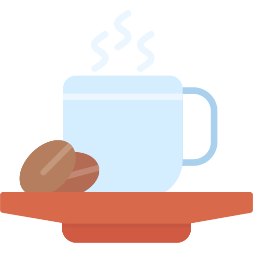

Cafezim
Bem-vindo ao Cafezim, um oásis de café no coração da floresta. Aqui, entre árvores centenárias e o murmúrio suave do riacho próximo, encontramos um refúgio para os amantes do café e da natureza. Nossa cafeteria é um convite para uma pausa revigorante no meio do verde exuberante, onde cada xícara conta uma história de cuidado e qualidade. Nossos baristas, como verdadeiros alquimistas da floresta, preparam com carinho uma variedade de cafés artesanais, desde os clássicos espresso até misturas exclusivas que capturam os aromas e sabores únicos desta localização especial. No Cafezim na Floresta, cada visita é uma experiência que celebra a harmonia entre o café e o ambiente natural ao seu redor.
Nosso grão
O grão de café é tipo a semente maneira que vem do fruto do cafeeiro, saca? Depois que é colhido, passa por umas paradas tipo fermentação e secagem, aí ele mostra uma variedade de aromas e sabores que todo mundo curte. A torra é super importante porque é aí que ele ganha aquelas características únicas que a gente adora no cafezinho. Tem várias variedades e é cultivado em altitudes diferentes, garantindo uma experiência de café com muita personalidade pra quem é fã da cafeína.


- 